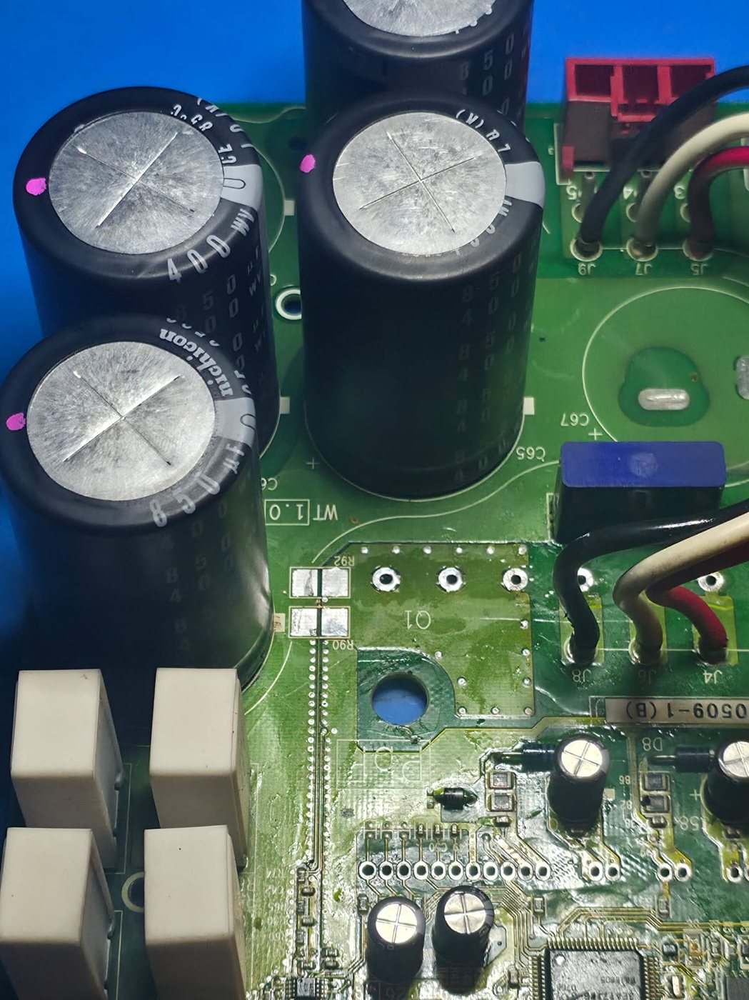
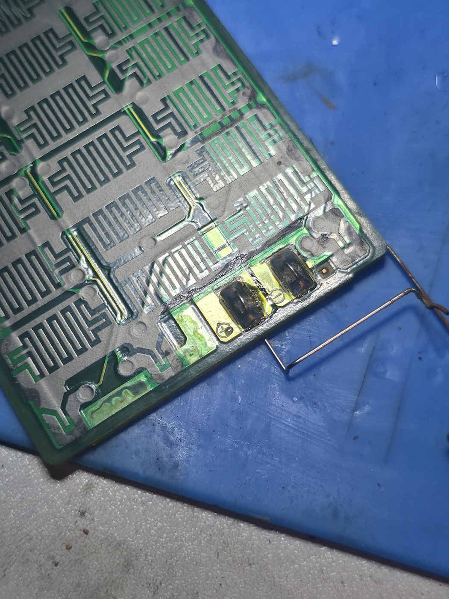

Air conditioning control board
Power module, three-phase bridge rectifier and two resistors replaced. A board like this is usually quoted as a whole-unit replacement.
Inverter boards, IPM power modules, filter boards and control boards repaired at component level, instead of replacing the whole board or the unit. For installers, maintenance firms and the public. Drop off by appointment in Watford, or post your board from anywhere in the UK.
Book a repairWe've developed our own bench tester for air conditioning boards. It runs the checks that would otherwise take days of manual testing, so your board comes back sooner.
Testing a board by hand on the bench can take days. On our tester, the checks take hours, so you get your board back sooner.
The tester runs the same checks every time and records the results, so nothing gets missed.
For the inverter (IPM) board, it checks every switch in the power module and its drive circuit. For the filter board, it checks the mains path through the board, the communication circuit and the current sensor.
We designed and built it ourselves for the boards we see most. It currently covers the Fujitsu K03CE-C-A outdoor IPM board and the K03BX-C-A filter board. Other boards are tested by hand.
Send the board, not the unit.
Outdoor inverter boards and their power modules (IPMs), the boards that drive the compressor.
The board where mains comes in, including its fuses, filtering and current sensing.
Main control boards for indoor and outdoor units, including communication faults between them.
Switch-mode power supplies on air con boards that fail and take the rest of the unit down.
Remote control boards, including battery leak corrosion.
Boards from all makes of split and multi-split units. Tell us the make and board number when you book.
Every repair is photographed at each stage, and you get the pictures.

Power module, three-phase bridge rectifier and two resistors replaced. A board like this is usually quoted as a whole-unit replacement.

Leaking batteries had corroded the terminals badly. Terminals replaced and the board cleaned up.
Worth a few minutes before you have the board removed.
Quoted individually. Every air con board is different, so we quote before any work. No repair work starts until you've approved the price.
Parts are charged separately where needed. If we post it back, return postage is added at cost. If we can't repair it, there's no charge for our time. Full details in our terms.
By appointment. Collect it in person and there's no postage to pay.
From anywhere in the UK. Return postage is charged at exactly what the carrier charges us.
Our workmanship and any replacement parts are guaranteed for 12 months. Your statutory rights are not affected.
No. Just send the board, removed by a qualified engineer. Tell us the make, the model of the unit and the board number printed on it.
For the boards our in-house tester covers, testing takes hours rather than days once your board is on the bench. Other boards are tested by hand, which takes longer. We don't promise a repair date before we know the fault.
All makes. Our tester currently covers the Fujitsu K03CE-C-A outdoor IPM board and the K03BX-C-A filter board; other boards are diagnosed and tested by hand.
Every air con board is quoted individually. No repair work starts until you've approved the price, and if we can't repair it there's no charge for our time.
Yes. We repair boards for air conditioning installers and maintenance firms, as well as for the public.
Our workmanship and any replacement parts are guaranteed for 12 months. It covers the repair we carried out. Every repaired board has a numbered warranty sticker, which needs to stay in place. Your statutory rights are not affected.
Other boards? See our circuit board repair and UK mail-in board repair pages.
Tell us the make, the board number and the error code, and we'll email you a free, no-obligation estimate.
Book a repair